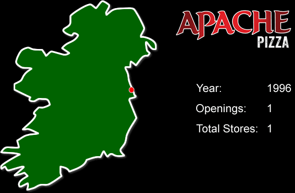

About us
We're a small family-run business that started in 1998. We're a small family-runThe growth in the American Pizza market in 1986 was what initially grabbed our attention. By 1995, Pizza was still the number one growth sector in the fast food industry. This decade of sustained growth in the U.S.A showed us that we had only realised the tip of the iceberg in the Irish market and that there was huge potential for growth. The Good Food Company recognised a service gap in the market for an Irish pizza delivery brand. Apache Pizza was launched in Dublin in 1996. We wanted a strong name that would reflect the fact that our pizzas are an original American style, as opposed to the original Italian style pizzas which have a different dough base.
Apache Pizza was so named in the spirit of admiration and respect for the indigenous peoples of North and South America. The etymology of the word Apache is widely believed to have come from the Yuma word for 'fighting men' and the Zuni word meaning 'enemy'. Apache, by definition, is a collective term for several culturally related groups of Native tribes who stood up against oppression under the incredible Geronimo.
We are working hard to develop, evolve and improve Apache Pizza in a culturally sensitive and considerate way.
Since 1996, Apache Pizza have opened over 180 outlets around the country. We are committed to developing and expanding Apache Pizza in order to become the biggest and the best pizza retail and delivery operator in Ireland and Northern Ireland. The market for delivered/take-away fast food is progressing from the traditional 'deep fried' high fat content foods toward fast food which constitutes a more balanced nutritional offering to an increasingly discerning consumer. Apache Pizza are now leading the way working with Health Pro and providing nutritional values and portion advice not only available on our website but also printed on all our menus and available instore.
Focused on our Franchisees
We feel the primary reason for our rapid expansion is due to the fact that, unlike our competitors, we remain very focused on our franchisees. Under the leadership of our Managing Director, Martin Lyons, Apache has refined and streamlined a user-friendly system that means people from all walks of life can come on board and learn the business with ease. This starts with the basics of making a pizza, right through to running several stores.
Expansion in Northern Ireland
In 2016, we opened our first store in Portadown. We have since opened a further thirty stores across Northern Ireland and aim to continue this growth in the coming years.